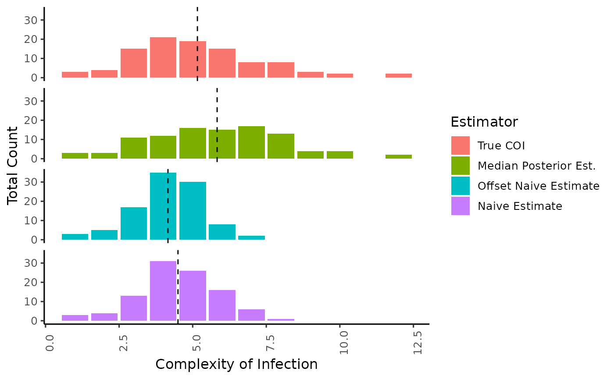
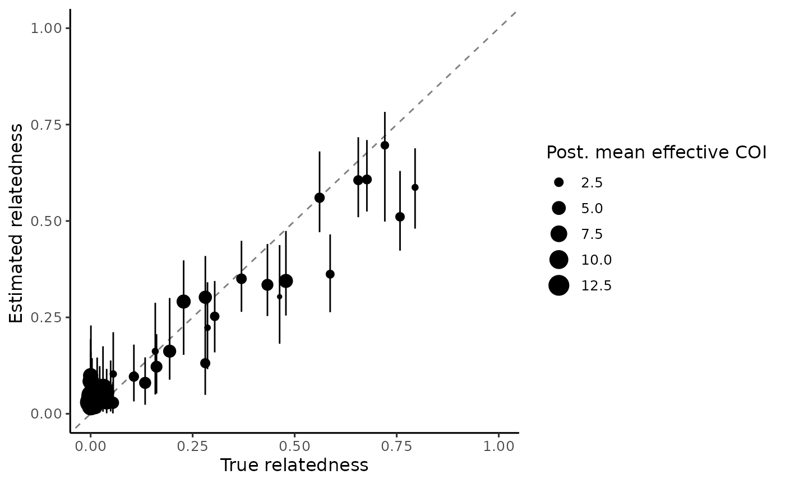
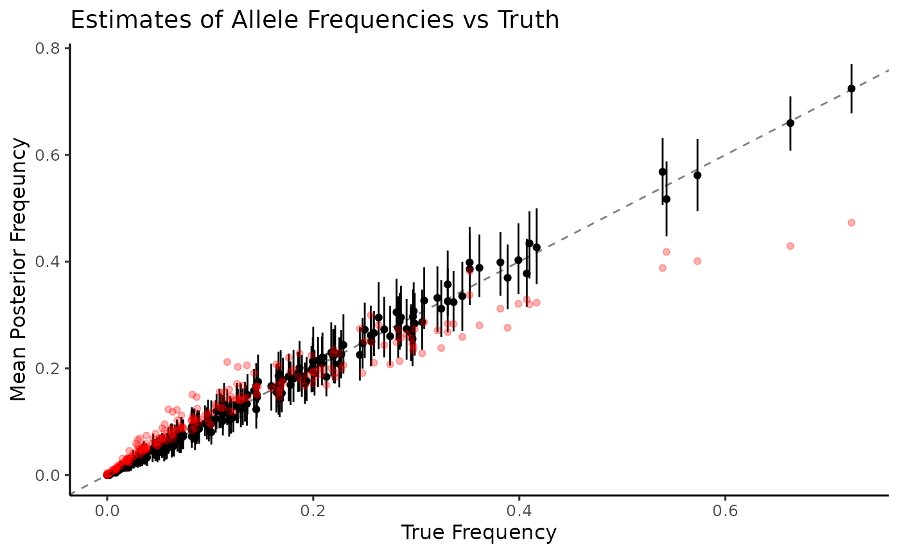
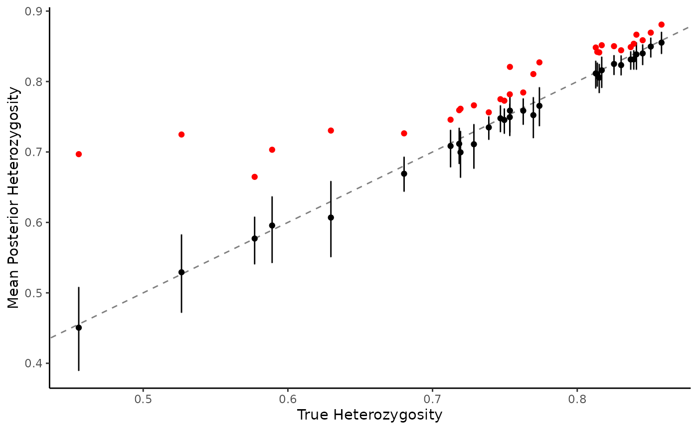

Simulation and MCMC
To demonstrate the usage of the package, we can simulate some genotyping data according to our model, allowing for some relatedness within samples in the population.
set.seed(17325)
mean_moi <- 5
num_biological_samples <- 100
epsilon_pos <- .01
epsilon_neg <- .03
# Generate the number of alleles at each locus
allele_counts <- c(rep(5, 15), rep(10, 15), rep(25, 15), rep(50, 15))
# We'll use flat alpha vectors for our draws from the Dirichlet
locus_freq_alphas <- lapply(allele_counts, function(allele) rep(1, allele))
simulated_data <- moire::simulate_data(
mean_moi,
num_biological_samples,
epsilon_pos, epsilon_neg,
locus_freq_alphas = locus_freq_alphas,
internal_relatedness_alpha = .1,
internal_relatedness_beta = 1
)Now that we have our data, let’s go ahead and run the MCMC. Here we run 20 parallel tempered chains with a temperature gradient ranging from \([.5, 1]\)
burnin <- 1e4
num_samples <- 1e4
pt_chains <- seq(1, .5, length.out = 20)
mcmc_results <- moire::run_mcmc(
simulated_data,
verbose = T, burnin = burnin, samples_per_chain = num_samples,
pt_chains = pt_chains, pt_num_threads = length(pt_chains), thin = 10
)After running the MCMC, we can access the draws from the posterior distribution and analyze.
# Estimate the COI for each sample
coi_summary <- moire::summarize_coi(mcmc_results)
# We can also summarize statistics about the allele frequency distribution
he_summary <- moire::summarize_he(mcmc_results)
allele_freq_summary <- moire::summarize_allele_freqs(mcmc_results)
relatedness_summary <- moire::summarize_relatedness(mcmc_results)
effective_coi_summary <- moire::summarize_effective_coi(mcmc_results)
# Let's append the true values for use later
sample_data <- data.frame(
coi_summary, effective_coi_summary, relatedness_summary,
true_coi = simulated_data$sample_cois,
true_effective_coi = (simulated_data$sample_cois - 1) * (1 - simulated_data$sample_relatedness) + 1,
true_relatedness = simulated_data$sample_relatedness
)
he_data <- data.frame(
he_summary,
true_he = sapply(
moire::calculate_naive_allele_frequencies(simulated_data$true_genotypes),
function(x) moire::calculate_he(x)
),
naive_he = sapply(
moire::calculate_naive_allele_frequencies(simulated_data$data),
function(x) moire::calculate_he(x)
)
)
allele_freq_data <- data.frame(
allele_freq_summary,
naive_allele_frequency = unlist(
moire::calculate_naive_allele_frequencies(simulated_data$data)
),
true_allele_frequency = unlist(
moire::calculate_naive_allele_frequencies(simulated_data$true_genotypes)
)
)Estimating COI
Here we demonstrate the difference in distribution of the estimate of COI using our approach vs the naive method of taking the maximum number of alleles observed (Naive Estimate), or the second highest number of alleles observed (Offset Naive Estimate). Mean of the distribution is annotated by a dotted line.
coi_estimates <- sample_data |>
dplyr::select(post_coi_med, naive_coi, offset_naive_coi, true_coi, sample_id) |>
tidyr::pivot_longer(-sample_id,
names_to = "estimator",
values_to = "estimate") |>
dplyr::mutate(estimator_pretty = case_when(
estimator == "post_coi_med" ~ "Median Posterior Est.",
estimator == "naive_coi" ~ "Naive Estimate",
estimator == "offset_naive_coi" ~ "Offset Naive Estimate",
estimator == "true_coi" ~ "True COI")) |>
transform(estimator_pretty = factor(estimator_pretty, levels = c(
"True COI",
"Median Posterior Est.",
"Offset Naive Estimate",
"Naive Estimate"
)))
coi_estimate_summaries <- coi_estimates |>
dplyr::group_by(estimator_pretty) |>
dplyr::summarise(mean = mean(estimate))
ggplot() +
geom_bar(data=coi_estimates, aes(x = estimate, group = estimator_pretty, fill = estimator_pretty, stat(count))) +
geom_vline(data=coi_estimate_summaries, aes(xintercept=mean, group = estimator_pretty), linetype="dashed") +
facet_wrap(~estimator_pretty, ncol = 1) +
xlab("Complexity of Infection") +
ylab("Total Count") +
labs(fill="Estimator") +
theme_classic(base_size = 12) +
theme(axis.text.x = element_text(angle = 90),
strip.background = element_blank(),
strip.text = element_blank())
#> Warning: `stat(count)` was deprecated in ggplot2 3.4.0.
#> ℹ Please use `after_stat(count)` instead.
Since we simulated data, we know the true complexity of infection and can compare to our estimates. Observations are ordered by COI with dotted lines delimiting the total COI.
coi_compare_to_truth <- sample_data |>
dplyr::select(post_coi_mean, naive_coi, offset_naive_coi, true_coi, sample_id, post_coi_lower, post_coi_upper) |>
tidyr::pivot_longer(c(-sample_id, -true_coi, -post_coi_lower, -post_coi_upper),
names_to = "estimator",
values_to = "estimate") |>
dplyr::mutate(
estimator_pretty = case_when(
estimator == "post_coi_mean" ~ "Posterior Est.",
estimator == "naive_coi" ~ "Naive Estimate",
estimator == "offset_naive_coi" ~ "Offset Naive Estimate"
),
sample_id = forcats::fct_reorder(sample_id, true_coi, min),
ymin = case_when(
estimator == "post_coi_mean" ~ post_coi_lower - true_coi,
estimator == "naive_coi" ~ estimate - true_coi,
estimator == "offset_naive_coi" ~ estimate - true_coi
),
ymax = case_when(
estimator == "post_coi_mean" ~ post_coi_upper - true_coi,
estimator == "naive_coi" ~ estimate - true_coi,
estimator == "offset_naive_coi" ~ estimate - true_coi
)
) |>
transform(estimator_pretty = factor(estimator_pretty, levels = c(
"Posterior Est.",
"Offset Naive Estimate",
"Naive Estimate"
))) |>
dplyr::arrange(true_coi)
coi_bins <- sample_data |>
dplyr::group_by(true_coi) |>
dplyr::summarize(n = n()) |>
dplyr::mutate(pos = cumsum(n))
ggplot(data=coi_compare_to_truth, aes(x = sample_id, y = estimate - true_coi, ymin = ymin, ymax = ymax, group = estimator_pretty, color = estimator_pretty)) +
geom_errorbar() +
geom_point(alpha = 1) +
facet_wrap(~estimator_pretty, ncol = 1) +
geom_hline(yintercept=0, linetype="dashed", alpha=.5) +
geom_vline(data=coi_bins, aes(xintercept = pos), linetype = "dotted", alpha = .5) +
xlab("Sample") +
ylab("Estimate - True COI") +
labs(color="Estimator") +
theme_classic(base_size = 12) +
theme(axis.text.x = element_blank(),
axis.ticks.x = element_blank(),
strip.background = element_blank(),
strip.text = element_blank())
Estimating effective COI
Since there is some underlying relatedness in the population, we might be actually be interested in the effective COI, a metric that adjusts for underlying within-host relatedness and allows for intermediate values of COI.
What is effective COI?
This metric can be interpreted as the expected number of alleles that would be observed within a sample at a locus with infinite diversity (i.e. \(H_e = 1\)). In the case of zero within-host relatedness, every allele observed is unique and thus effective COi is equal to the actual complexity of the infection. As relatedness approaches 1, the expected number of alleles converges to 1 no matter the underlying true COI. It turns out that this relationship is linear, and can be expressed as \(COI_{eff} = (COI - 1) * (1 - r) + 1\) where r is the probability of strains being related (and thus with identical genetics) across the genome. This results in a continuous metric that shrinks COI towards 1 as relatedness increases, and thus differences between mean COI and mean effective COI may be a signal of reduced diversity and increased in-breeding.
ggplot(sample_data, aes(x = true_effective_coi, y = post_effective_coi_mean, ymin = post_effective_coi_lower, ymax = post_effective_coi_upper)) +
geom_abline(slope = 1, intercept = 0, linetype = "dashed", alpha = 0.5) +
geom_errorbar() +
geom_point() +
xlab("True effective COI") +
ylab("Estimated effective COI ") +
theme_classic(base_size = 12) +
expand_limits(x = 1, y = 1) We can see that
We can see that moire is able to accurately recover true
underlying effective COI despite the potential identifiability issues of
relatedness or COI independently. Next let’s estimate relatedness within
samples.
Estimating Relatedness
ggplot(sample_data,
aes(x = true_relatedness, y = post_relatedness_mean, ymin = post_relatedness_lower, ymax = post_relatedness_upper)) +
geom_abline(slope = 1, intercept = 0, linetype = "dashed", alpha = 0.5) +
geom_errorbar() +
geom_point(aes(size = post_effective_coi_mean)) +
xlab("True relatedness") +
ylab("Estimated relatedness ") +
labs(size = "Post. mean effective COI") +
theme_classic(base_size = 12) +
expand_limits(x = 1, y = 1)We see that the estimated relatedness per sample in general has wide credible intervals, in particular for samples with low effective COI. This is explained by the fact that lower COI samples have less information available to actually estimate relatedness, and samples with a true COI of 1 would have zero information because relatedness is an undefined quantity. If we filter out samples with a low effective COI (> 1.2), we find that relatedness is well estimated.
ggplot(sample_data |> filter(post_effective_coi_mean > 1.2),
aes(x = true_relatedness, y = post_relatedness_mean, ymin = post_relatedness_lower, ymax = post_relatedness_upper)) +
geom_abline(slope = 1, intercept = 0, linetype = "dashed", alpha = 0.5) +
geom_errorbar() +
geom_point(aes(size = post_effective_coi_mean)) +
xlab("True relatedness") +
ylab("Estimated relatedness ") +
labs(size = "Post. mean effective COI") +
theme_classic(base_size = 12) +
expand_limits(x = 1, y = 1)
Estimating allele frequencies
ggplot(allele_freq_data) +
geom_errorbar(aes(
y = post_allele_freqs_mean,
x = true_allele_frequency,
ymax = post_allele_freqs_upper,
ymin = post_allele_freqs_lower)) +
geom_point(aes(y = post_allele_freqs_mean, x = true_allele_frequency)) +
geom_point(aes(y = naive_allele_frequency, x = true_allele_frequency), color = "red", alpha = .3) +
geom_abline(slope = 1, intercept = 0, linetype = "dashed", alpha = .5) +
ylab("Mean Posterior Freqeuncy") +
xlab("True Frequency") +
theme_classic(base_size = 12) +
expand_limits(x = 0, y = 0) +
ggtitle("Estimates of Allele Frequencies vs Truth") Again, naive estimation of allele frequencies (red) is heavily biased and lacks any estimates of uncertainty. Allele frequencies are very well estimated by MOIRE (black), recovering values from the entire range along with measures of uncertainty at the 95% credible interval. Since we have access to the full distribution of sample allele frequencies, we can also look at distributions of other summary statistics that might be of interest. For example, let’s take a look at expected heterozygosity.
Estimating expected heterozygosity
ggplot(he_data, aes(x = true_he)) +
geom_errorbar(aes(y = post_stat_mean, ymax = post_stat_upper, ymin = post_stat_lower)) +
geom_point(aes(y = post_stat_mean), color = "black") +
geom_point(aes(y = naive_he), color = "red") +
geom_abline(slope = 1, intercept = 0, linetype = "dashed", alpha = .5) +
xlab("True Heterozygosity") +
ylab("Mean Posterior Heterozygosity") +
theme_classic() Naive estimation (red) results in a severe upward bias, especially at lower levels of expected heterozygosity. MOIRE maintains high accuracy (black), including measures of uncertainty at the 95% credible interval.